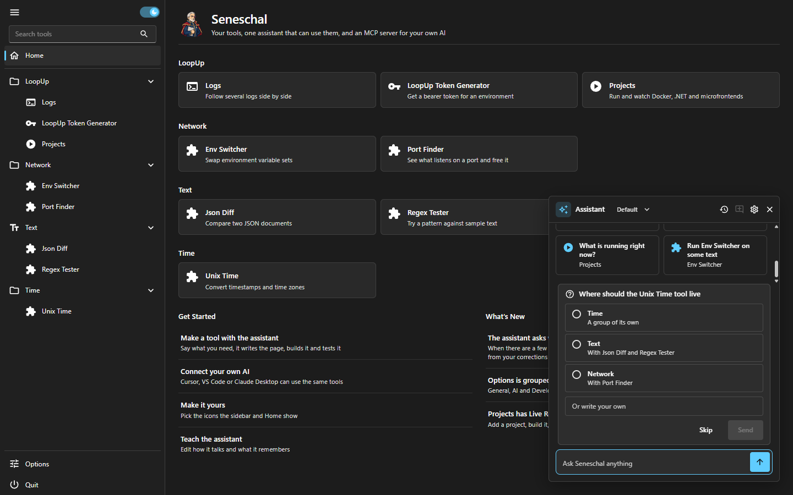
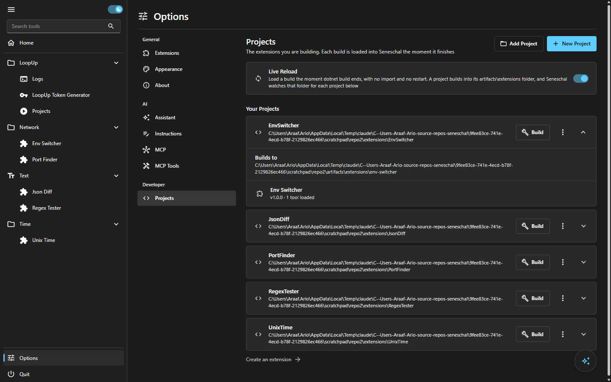
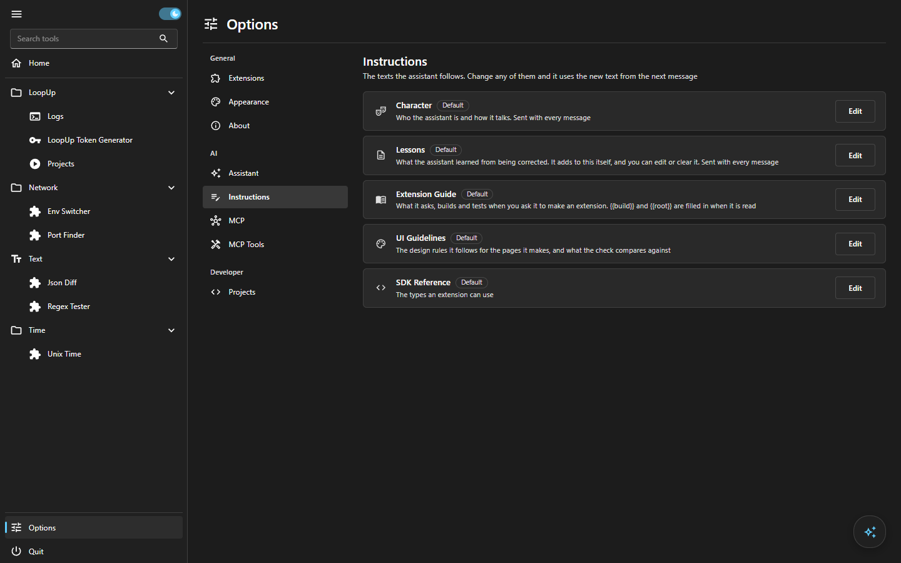
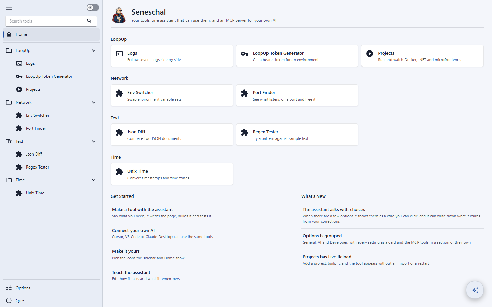

Seneschal Quality Report
14 October 2026. The settings redesign, a design audit of every screen, behavior tests, improvements, and the new README. Nothing is committed.
Key points
- Options is a real settings page now. Sections are grouped (General, AI, Developer), every setting is a card with a title, one line and a control at the right, sub-options open in a one-level expander, and Live Reload lives in Options, Projects. The old Developer page is gone.
- The design audit found real bugs, not just taste. The app was unusable in a narrow window (the 300px sidebar pushed every page out of view), no dialog closed with
Esc, a wrong MCP secret returned a 400 page instead of a 401, and the New Project dialog used checkboxes for on and off settings. - Home no longer looks like a landing page. The gradient banner, the dictionary paragraph and the 72px icon tiles are replaced by a quiet header, tools grouped by name, favorites, a Get Started list and What's New.
- The assistant can ask, learn and edit itself. It asks with a clickable card when there are clear options, writes one-line lessons when corrected (you can edit them), and can change its own character after you allow it.
- The rules now have 26 named checks. Your list is in
docs/ui-guidelines.mdas What to avoid (A1 to A15, B1 to B11), adapted to a dense desktop tool, plus new rules from what the audit found twice. - Every behavior check passes after two fixes (the MCP status code and
Escin dialogs), and one open question. Not tested here: a real Claude conversation, the installer, updates, and the Docker and log features of the LoopUp extension against real containers. - The README now says what it is for, with specific situations instead of a feature list, and real screenshots from the running app.
Major changes
Options and the pattern behind it
The pattern follows the Fluent app settings guidance: group related settings under headers, one card per setting (icon, title, one line, control at the right), an expander for sub-options that is never nested deeper than one level, a scrollable page about 1000px wide at most. Sources: Guidelines for app settings and the SettingsExpander discussion.
| Section | What it is now |
|---|---|
| Extensions | One card per tool, a pill switch and a menu. A badge only says an exception (Dev, Built-in). The filter and chips appear once there are more than five. Version moved into the menu. |
| Appearance | One expander per group with its tools inside, icon pickers, Default and Custom badges, reset. |
| About (new) | Version, update check, address, data folder and log with Reveal. Also a tool: seneschal_about. |
| Assistant | Claude path, model, and the test browser switch. |
| Instructions | Character, Lessons, Extension Guide, UI Guidelines and SDK Reference as cards with Edit and Reset. |
| MCP and MCP Tools | Split in two. Connection and client setups in one, every tool offered in the other (grouped, filterable). |
| Projects (Developer) | Live Reload with clear wording, projects as expanders with Build, a menu, and what each one loaded. An empty page explains the three steps. |
Toggles are now always the rounded pill (40 by 24), with a gap before the label. This is a rule, and the one checkbox in the app that was really a setting became a switch, in two places.
Assistant
seneschal_ask_user: options as rows with a short line each, a box for your own answer, Skip. A single choice answers on the click.seneschal_lesson_add,seneschal_instructions_list,seneschal_instruction_readandseneschal_instruction_update(asks first). Lessons are sent with every message and are editable in Options, Instructions.




1. UI audit
Method: every surface in docs/qa/ui-audit-plan.md opened at 1440, 760 and 375 pixels in dark and light, checked against the list of rules, fixed, and looked at again. A final sweep of 16 pages and states at the three widths and both themes (96 screenshots) found no sideways scroll and no blank page.
| # | Where | Rule | Found | Fix |
|---|---|---|---|---|
| 1 | Home | A1, A6, A15 | A blue to brown gradient behind the whole page, a hero with a dictionary definition, glass-blurred cards with 72px icon tiles. | Flat page, small header, tools grouped, 24px icons, no blur. |
| 2 | Home | B4 | Tool descriptions were dim text at 72% opacity on top. | One dim color, no opacity. |
| 3 | Every page at 375px | B10 | The 300px sidebar stayed open, so every page scrolled sideways and its content was off screen. | Under 800px the sidebar is a rail that opens over the page and closes when you pick a page. Cards wrap their controls. |
| 4 | Extensions | A9, A13, A14 | Installed v1.0.0 on every row, a filter and four chips for three items, a tooltip on a switch with a label. | Badge only for exceptions, filter from six items, version in the menu, no tooltip. |
| 5 | Create an Extension | A4, A15, B7 | Numbered circles in cards, nine accordion cards, old button names, sentences run together without full stops. | Flat steps and hairline-separated reference, prose with full stops, quick way first. |
| 6 | Options, Projects | A9 | Two badges on every project (Loaded, This repository). A one-line empty state. | A badge only when not loaded. A three-step guide when empty. |
| 7 | LoopUp, Projects | B3, A14, A5 | Four filled primary buttons on one page, disabled Select all, Start and Stop on empty lists, centered empty boxes. | Outlined add buttons, the filter and bulk row hidden when empty, left-aligned empty states in the normal text color. |
| 8 | New Project dialog | A13, my own switch rule | Title said Create New Extension, helper text under every field, checkboxes for on and off. | Title New Project, helper text kept where it adds something, pill switches. |
| 9 | All dialogs | B9, B8 | Esc closed nothing and no field had focus. | Dialogs close with Esc and take the keyboard, the first field is focused. |
| 10 | Assistant question card | A5 | My own new card centered its options (a button centers its content). | Left-aligned. The rule now says so. |
| 11 | Wording | Wording rule | Trailing full stops and ... in the reconnect screen, Tool not found, Logs and two dialogs. | Rewritten short. |
| 12 | Toasts | B1, B11 | A failed build put eight lines of errors in a toast that covered the assistant button. | One line and a Details popup with Copy. Toasts sit above the assistant button. |
| 13 | Token page | B2, A11 | A button taller than the fields beside it, sizes and opacity written by hand. | Sizes from the scale, dim text from the theme. |
| 14 | Delete dialog, MCP Tools | B7 | Delete extension in Sentence case. Extension ids (env-switcher) as headings. | Delete Project. Ids read as names. |
Passed without change
Options pages in light and dark at 1440 and 760, the Appearance expanders, the MCP section, the approval cards (allow and deny), the delete confirmation, the import confirmation, the assistant empty state and history, the Not Found page, contrast on the pill switches in both themes.
Rules added
- What to avoid in the guidelines: your list as A1 to A15 (looks machine-made) and B1 to B11 (bad in any style), adapted: body text 14px, dim text 13px and never under 12px, controls 30 or 36px for a mouse, checked at 1440, 760 and 375px.
- Toggle: always the pill switch, 40 by 24, with a gap of 8px before the label. Never a square track or a checkbox for on and off.
- Settings pages: layout, section head, group heading, setting card, one-level expander, status badges, actions, empty states, wording.
- Found twice: a button does not center its content for you (A5), a badge says an exception (A9), a page of several sections has no filled button and empty lists hide their bulk row (B3), a narrow window gets a rail that opens over the page (B10), dialogs close with
Escand take focus, prose in documentation pages keeps its full stops. - Process: when you call a design bad, the rule is updated in the same change (saved as a standing note).
2. Behavior tests
Run on a copy of the repository, on its own port, with a scratch data folder. Plan: docs/qa/behavior-test-plan.md.
| Area | Check | Result |
|---|---|---|
| MCP | initialize, tools/list (52 tools), unique lowercase names, every tool has a description and an object schema | Pass |
| MCP | Wrong secret and no secret refused | Failed, fixed |
| MCP | The 13 tools that take no arguments and change nothing, called for real | Pass |
| MCP | Unknown tool, missing argument, unknown id, path outside a project: all come back as errors the AI can read | Pass |
| Approvals | A destructive call waits, the launcher shows a badge, the card is red, Deny returns "did not allow", Allow saves | Pass |
| Questions | seneschal_ask_user round trip: card shown, one click answers, the tool returns the label | Pass |
| Lessons | Added as a dated line, kept in the data folder, read back | Pass |
| Extensions | Import asks first, loads live with no restart | Pass |
| Extensions | Turning a tool off removes its MCP tools, on brings them back, kept after a restart | Pass |
| Extensions | Remove Build | Pass |
| Projects | New Project creates, builds and loads in about 25 seconds, tool in the sidebar | Pass |
| Projects | A name that is already used is refused with a reason | Pass |
| Projects | A compile error is reported, the old build stays loaded, fixing it and building again loads the new one | Pass |
| Projects | Live Reload switch, Delete Project (asks, moves to .deleted, tool gone) | Pass |
| Dialogs | Esc closes a dialog | Failed, fixed |
| Shell | Icons and tool state kept after a restart, theme override, Not Found page, Ctrl+K and Ctrl+J | Pass |
| CLI | status, start twice (does not start a second), version, logs, help, unknown command, doctor | Pass |
| Projects | After Delete Project, a copy of the extension was still loaded from the app's own extensions folder once. Not reproduced with a second project. | Open |
Not tested here: a real conversation with Claude Code (the panel was only opened and its cards driven through MCP), the installer, the update flow, Docker containers, real log sources and the setups for Cursor, VS Code and Claude Desktop (they are generated, not tried in those apps), and anything on a machine without the .NET SDK.
3. Improvements
Why Seneschal matters and the whole list with priorities is in docs/qa/improvement-plan.md. In short: it is local, a tool takes minutes, and everything is also an MCP tool. The rule used to decide what to do directly: it stays inside this repository, it matches how Seneschal already works, and the effect is big.
| Done | Why |
|---|---|
| Home that teaches (Get Started, What's New, Favorites) | The first ten minutes decide whether it is kept. |
| Projects empty state, build failure Details, toasts clear of the assistant | The place people get stuck and the moment they are least patient. |
Ctrl+K, Ctrl+J, Esc | Daily friction. |
| Rail in narrow windows | Usable next to an editor. |
| Ask with choices, lessons, editing its own character | Trust and fit. |
About, and seneschal doctor | Answers "where is my data and why does it not start" without reading logs. |
| Plain 401 for a wrong MCP secret | Clients show a useful error. |
Next, in order: more templates for a new extension (command runner, form and table, dashboard), a gallery of sample extensions, signed packages with the author shown at import, and a backup of all settings. They are in the plan with the rest.
4. README and docs
- README: opens with the specific situations Seneschal helps with (scattered scripts, forgotten commands, no time to build a UI, more than one AI, wanting supervision, no accounts), then how it works, Claude and MCP, three ways to make a tool, install, honest answers to the likely questions. Nine screenshots, taken from the running app with a set of demo tools made through the New Project dialog.
- Docs updated: the assistant guide (questions, lessons, editing itself), the install guide (
seneschal doctor), the extension guide and the app README (Options, Projects replaces the Developer page), the tutorial inside the app (rewritten), the UI guidelines (rules above). - New:
docs/qaholds the three plans, so the audit and the tests can be repeated.
Open items and things to know
- Nothing is committed. About 135 paths changed in this repository, and the LoopUp extension repository has changes too (the Projects page, wording, a switch).
- The LoopUp extension has to be built again and imported again to get its fixes:
dotnet buildin its repository, then Options, Extensions, Import. extensions/Calculatorin this repository is an untracked leftover project that was not made in this round. It is not part of any change here and was left alone.- Fields are 32px high and buttons 36px, so a field and a button on one row differ by a few pixels. A global change broke the sidebar search and the model select, so it was reverted. It needs a proper pass on the input styles.
- The question card and the approval card were not tried with a screen reader.
- The Home What's New list is a short static list in
Shell/WhatsNew.cs. It has to be edited by hand for each release. - The "Change All tools to Home" request: the sidebar already said Home everywhere in this repository, so there was nothing to change.
How to repeat it
- Plans:
docs/qa/ui-audit-plan.md,docs/qa/behavior-test-plan.md,docs/qa/improvement-plan.md. - Run a copy of the app on its own port with
SENESCHAL_DATA_DIRset to a scratch folder, never the real one. - MCP checks need the secret from
mcp-secret.txtin that folder. Every call is one JSON-RPC POST to/mcp.